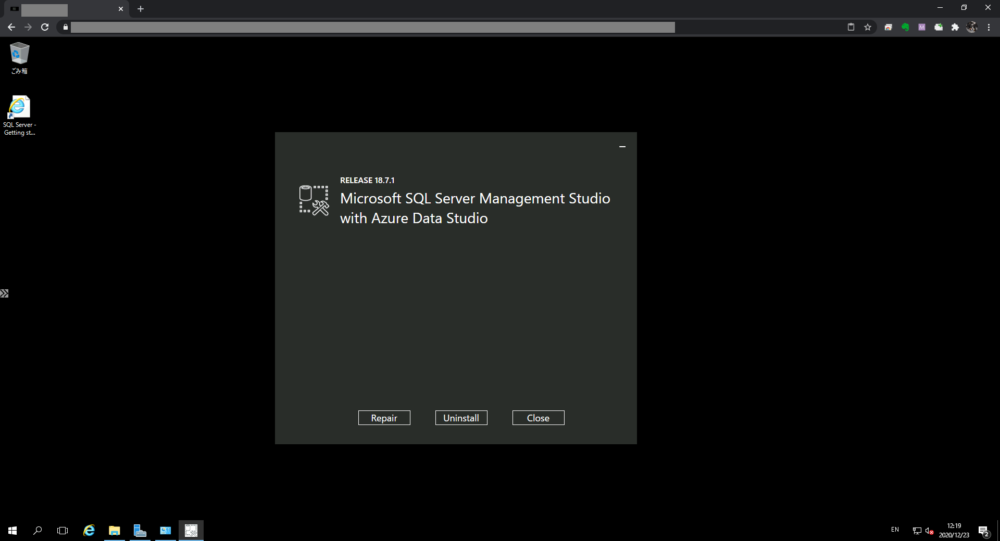

英語版 SSMS アンインストール
Azure で SQL Server を含むイメージをデプロイすると英語版の SSMS がプリインストールされてしまうためこれをアンインストールする必要があります。
[コントロールパネル] / [プログラムと機能] で SQL Server Management Studio をアンインストールします。

日本語版 SSMS インストール
https://docs.microsoft.com/ja-jp/sql/ssms/download-sql-server-management-studio-ssms?view=sql-server-ver15 にアクセスし [使用出来る言語] で日本語をクリックし日本語版のインストーラをダウンロードします。
日本語版のインストーラを実行します。
日本語版インストール前に SSMS を実行していない場合
日本語で表示されます。
日本語版インストール前に SSMS を実行した場合
英語で表示されてしまうため，日本語で表示されるように設定する必要があります。
[Tools] / [Options] をクリックします。
[Environment] / [International Settings] で Language を日本語にします。
日本語で表示されるようになります。